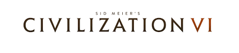

Risk
Risk es un juego gratuito (con microtransacciones) disponible para Android, Ios, y Windows(steam).
Este increible juego de estrategia cuenta con 4 modos de juegos disponibles:
1-Camapaña: En el que deberas defender o invadir determinadas zonas contra la maquina.
2-Multijugador local: En el que podreis jugar 2 o mas amigos pasando el movil o los controles del pc.
3-Multijugador en linea: Donde podras jugar con personas de todo el mundo (Hasta 6 jugadores)
4-Multijugador con amigos: Donde podras invitar a hasta 5 amigos más y comprobar quien de todos tiene más genes de Napoleón.
-Comienza tu turno -Según el numero de zonas completas que tengas conquistadas, recibiras mas o menos tropas -Despliega esas tropas donde tu quieras (puedes dividirlas) -Ataca con las tropas mas fuertes y amplia tu terreno (Que no se te olvide proteger sobre todo las fronteras) -El ultimo turno consiste en reforzar, esto sirve para mover unas tropas de un zona a otra antes de pasar de turno (Pudiendo asi elegir mejor como defender mientras no es tu turno) -Hay una cosa más: Cada vez que pasas un turno recibes una carta, cuando tengas 3 cartas diferentes recibes más tropas al principio de tu turno
Factorio
Factorio es un juego de gestión y crafting, mitad tycoon mitad Minecraft. En este juego controlas a un avatar anonimo que se encuentra en un mundo al parecer alienigena donde se encuentra con distintos minerales (Carbo, hierro, cobre...). Para poder sobrevivir tendrás que construir defensas y muros para protegerte a ti y a tu base de los ataques de hordas extraterrestres. De hecho a parte de defender puedes atacar: al acabar con una colonia extraterrestre (más cercana) dejaras de recibir ataques por un tiempo además de poder farmear recursos bastante caros.
Al igual que miencraft, Factorio tiene una “Historia” que puedes seguir, aunque nadie te obliga. Esta campaña o tu misión en este juego, es hacer un cohete y escapar (Los expertos en este juego que practican el “speed run”, basicamente acabar el juego lo más rapido posible, han conseguido escapar en tan solo 1h 58m). Una de las caracterísitcas que resulta bastante adictiva de este juego esque cada vez que te vas ampliando tu base con brazos robts, fabricando más energia con maquinas a vapor, puedes hacerte un tren y programar viajes de ida y vuelta para que te traiga minerales desde bases lejanas....
Cada vez que mejora todo se vuelve mas lioso, las cintas se cruzan, no hay suficiente electricidad o los malditos bichos alienigenas te estan atacando de nuevo y te han roto media base. No tiene un precio muy elevado en plataformas originales pero se puede encotrar facilmente “gratis” por internet, de nada <3

Sid Meier's Civilization VI
La saga más conocida como Civilization es un juego de turnos que se puede jugar online o contr la "maquina" (Como se suele decir para refernirnos a jugar contra la ia del juego). Para quien no lo sepa, el género 4X es una de las ramas de los videojuegos de estrategia más intensos, demostrando que no es necesario ofrecer un ritmos frenéticos o disponer de reflejos de lince para formar parte de gloriosas e interminables batallas. Y la serie 'Civilization' es el máximo referente.
Ahora bien, tarde o temprano nos encontraremos con otras culturas, y al contrario que en otros juegos de estrategia como 'StarCraft' podremos llegar a acuerdos con ellos, a veces comerciales, otros culturales o simplemente alianzas para exterminar a terceros, aunque no deberemos fiarnos de estas sociedades... y ellos tampoco deberían acostumbrarse demasiado a una paz prolongada: en 'Civilization' el pez grande siempre se come al chico.
La diplomacia es un elemento que poco ha evolucionado, lo cual no quiere decir que sea algo superficial, sino todo lo contrario. Nuestros lazos, alianzas y choques con el resto de pueblos del mundo es el eje central del juego y que no nos quepa duda de que, por muy nefasta que sea la IA a la que nos enfrentemos, por muchos tratados de paz que consigamos si nuestros avances nos hacen débiles acabaremos siendo invadidos.
Como siempre, la clave estará en encontrar un sistema en el que podamos avanzar en las ciencias, la filosofía y el comercio mientras apostamos por fortificar nuestra presencia en base a construcciones y ejércitos, Se podría decir que su raíz nace de los juegos de tablero, y es que en el fondo todo se desarrolla en base al máximo aprovechamiento de cada turno.
